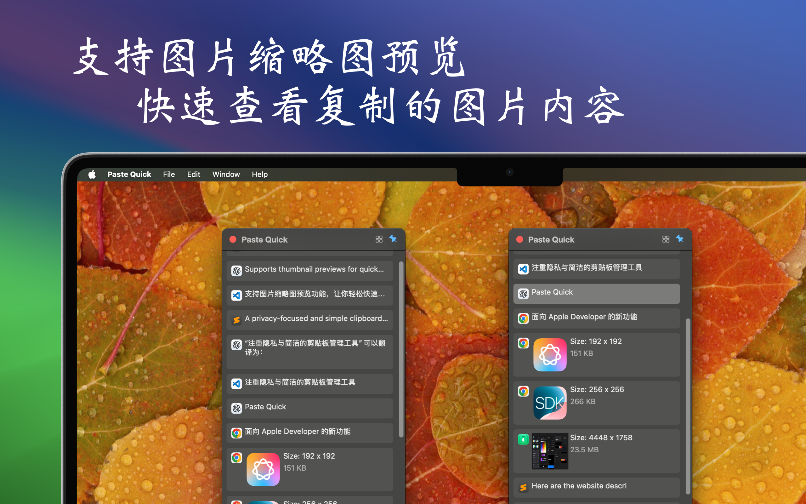
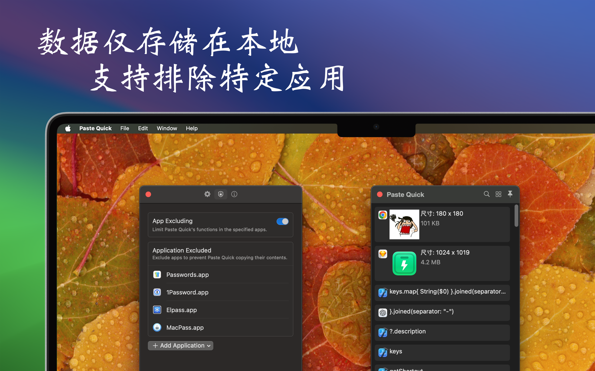

最低操作系统要求：macOS 14.0
PasteQuick 是一款注重隐私与简洁的剪贴板管理工具，帮助你高效管理各种临时数据，如文本、链接、图片和代码。它能够记录你复制或剪切的所有内容，并保存到历史列表中，让你快速查找并使用剪贴板记录，从而显著提升工作效率。


- 隐私保护：所有剪贴板历史记录仅存储在本地设备上，支持排除特定应用的记录，确保数据安全，隐私无忧。
- 多媒体预览：支持图片缩略图预览功能，让你轻松快速查看已复制的图片内容。
- 个性化设置：支持列表显示的自定义选项，可以根据需要隐藏或显示特定内容，满足不同场景的使用需求。


PasteQuick 正在不断优化开发中，期待为你的工作带来更多便利。欢迎提供宝贵的反馈与建议！